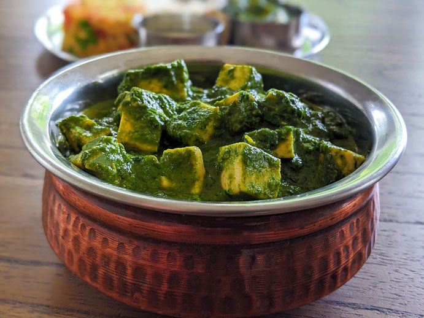

Palak Paneer

Delicious Palak Paneer
A fabulous Indian dish, good on its own or served with rice or naan bread. Substitute tofu for paneer to make it vegan.
Ingredients
- 2 tablespoons olive oil, divided
- 1 onion, diced
- 6 cloves garlic, crushed
- 2 teaspoons ground coriander
- 2 teaspoons ground turmeric
- 2 teaspoons garam masala
- 2 teaspoons red pepper flakes
- 2 teaspoons curry powder
- 2 teaspoons ground cumin
- 1 teaspoon salt
- 1 cup water
- 2 (10 ounce) packages frozen chopped spinach, thawed and drained
- 3 tomatoes, diced
- 2 tablespoons grated fresh ginger root
- 2 cups cubed paneer
Steps
- Heat 1 tablespoon olive oil in a skillet over medium heat; cook and stir onion until slightly tender, about 5 minutes. Add garlic, coriander, turmeric, garam masala, red pepper flakes, curry powder, cumin, and salt; cook and stir until fragrant, about 1 minute.
- Mix water, spinach, tomatoes, and ginger into the onion mixture; simmer for 20 minutes. Remove from heat and cool slightly, about 5 minutes.
- Transfer spinach mixture to a blender and blend until smooth.
- Heat remaining 1 tablespoon olive oil in a skillet over medium heat; cook and stir paneer until lightly browned, about 5 minutes. Stir pureed spinach mixture into skillet with paneer. Cook until heated through, 3 to 5 minutes.